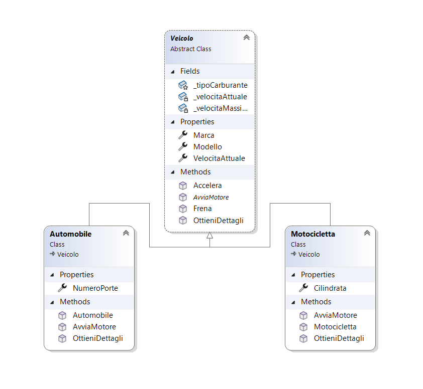

Ereditarietà in C#: l'arte di riutilizzare il codice (senza errori)
Scritto da Marco Morello il 10 Agosto 2025
Ciao developer e aspiranti tali!
Nei nostri ultimi viaggi, abbiamo imparato a costruire oggetti solidi con i costruttori e a proteggerli con l'incapsulamento. Abbiamo creato dei "mattoncini" di codice robusti e autonomi. Ora è il momento di fare il passo successivo: scoprire come questi mattoncini possono essere messi in relazione tra loro per costruire strutture più complesse e, soprattutto, per non ripetere mai più lo stesso codice.
Pensa all'ereditarietà come alla costruzione di un veicolo specializzato. Non parti da zero metallo grezzo. Parti da un telaio standard (la classe base), che ha già un motore, ruote e un sistema di sterzo. Da questa base solida, puoi creare un'auto sportiva (aggiungendo un alettone e un motore potenziato) o un furgone (aggiungendo un ampio vano di carico). Stai riutilizzando il lavoro già fatto e specializzando per un nuovo scopo.
Nella programmazione a oggetti, l'ereditarietà è esattamente questo: un meccanismo che permette a una nuova classe (la classe "figlia" o derivata) di ereditare campi, proprietà e metodi da una classe esistente (la classe "madre" o base). È il principio fondamentale del riuso del codice, ma, come ogni strumento potente, va usato con saggezza.
In questa guida, vedremo come funziona l'ereditarietà in C#, quando usarla e, cosa ancora più importante, quando evitarla per non cadere in trappole comuni.
📋 In questo articolo
- 🤔 Che cos'è l'ereditarietà? La relazione "is-a"
- ✍️ Sintassi base: come creare una classe figlia
- 🔑 La parola chiave `base`: dialogare con la classe genitore
- 🛡️ Il modificatore `protected`: i segreti di famiglia
- ⛓️ I limiti dell'ereditarietà: niente ereditarietà multipla
- 💡 E se una classe avesse bisogno di più 'genitori'? Le interfacce al soccorso
- ⚠️ Ereditarietà vs composizione: la domanda da un milione di dollari
- 🧠 Metti alla prova la tua comprensione
- 🏁 Conclusione: ereditare con criterio
🤔 Che cos'è l'ereditarietà? La relazione "is-a"
L'ereditarietà stabilisce una relazione di tipo "is-a" (è un/una) tra due classi. Una classe Automobile è un Veicolo. Una classe Manager è un Dipendente. Questa relazione, che sembra semplice, è il test fondamentale per decidere se l'ereditarietà è la scelta giusta. Se la frase "la classe figlia è un tipo di classe madre" ha senso, allora sei sulla strada giusta.
Questo significa che la classe figlia (o derivata) ottiene automaticamente tutti i membri pubblici e protetti della classe madre (o base), e può aggiungerne di nuovi o specializzare quelli esistenti.
✍️ Sintassi base: come creare una classe figlia
L'idea è semplice: invece di scrivere da capo una classe Automobile e una classe Motocicletta con le stesse proprietà (es. Velocita, Colore, Marca), creiamo una classe base Veicolo che le contiene e facciamo in modo che le altre due la "estendano".
// La classe base (o madre)
public class Veicolo
{
public string Marca { get; set; }
public int Velocita { get; protected set; }
public void Accelera(int incremento)
{
Velocita += incremento;
}
}
// La classe derivata (o figlia)
public class Automobile : Veicolo // La sintassi ":" stabilisce l'ereditarietà
{
public int NumeroPorte { get; set; }
}

Questo diagramma mostra visivamente che Automobile è un tipo specializzato di Veicolo, ereditandone tutte le caratteristiche e aggiungendone di proprie.
🔑 La parola chiave `base`: dialogare con la classe genitore
La parola chiave base è il ponte di comunicazione tra una classe figlia e la sua classe madre. Ha due usi principali e fondamentali.
1. Chiamare il costruttore della classe base
Se la classe base ha un costruttore che richiede dei parametri, la classe figlia ha la responsabilità di fornirglieli. Per farlo, usiamo : base(...) nella dichiarazione del suo costruttore. È un modo per dire: "Cara classe madre, prima di fare le mie cose, prendi questi dati e costruisci la tua parte".
public class Dipendente
{
public string Nome { get; }
public Dipendente(string nome)
{
if (string.IsNullOrWhiteSpace(nome)) throw new ArgumentException("Nome obbligatorio");
Nome = nome;
}
}
public class Manager : Dipendente
{
public int BonusAnnuale { get; set; }
public Manager(string nome, int bonus)
: base(nome) // Passiamo i dati al costruttore della classe base
{
this.BonusAnnuale = bonus;
}
}
🧠 Malizia da pro: se non chiami esplicitamente un costruttore con
: base(...), C# cercherà di chiamare il costruttore senza parametri della classe base (base()). Se questo non esiste, otterrai un errore di compilazione. È una regola ferrea: la parte "madre" di un oggetto deve essere sempre costruita prima della parte "figlia".
2. Accedere ai metodi della classe base
A volte una classe figlia ha bisogno di specializzare un comportamento, ma non di sostituirlo completamente. In questo caso, può ridefinire un metodo e, al suo interno, richiamare l'implementazione originale della classe base usando base.NomeMetodo().
public class Veicolo
{
public virtual string MostraInfo()
{
return "Questo è un veicolo generico.";
}
}
public class Automobile : Veicolo
{
public override string MostraInfo()
{
string infoBase = base.MostraInfo(); // Chiamo il metodo originale
return $"{infoBase} Nello specifico, è un'automobile.";
}
}
📘 Collegamento al futuro: le parole chiave
virtualeoverridesono il cuore del polimorfismo, l'argomento del nostro prossimo articolo. Per ora, ti basta sapere che permettono questa specializzazione controllata dei metodi.
🛡️ Il modificatore `protected`: i segreti di famiglia
Un membro protected è come un segreto di famiglia: è invisibile al mondo esterno (come private), ma è visibile e utilizzabile da tutte le classi che ereditano da essa. È lo strumento perfetto per esporre dati o metodi di supporto alle classi figlie senza però renderli parte dell'interfaccia pubblica.
⛓️ I limiti dell'ereditarietà: niente ereditarietà multipla
C'è una regola importante in C#: una classe può ereditare da una e una sola classe base. Questa limitazione serve a evitare un problema complesso noto come "problema del diamante" (diamond problem). Immagina che ClasseB e ClasseC ereditino entrambe da ClasseA e ridefiniscano un suo metodo. Se ClasseD potesse ereditare sia da B che da C, si troverebbe di fronte a un'ambiguità irrisolvibile: quale versione del metodo dovrebbe usare? Quella di B o quella di C? C# risolve il problema alla radice, impedendo questa situazione.
💡 E se una classe avesse bisogno di più 'genitori'? Le interfacce al soccorso
La risposta di C# al problema del diamante è elegante e potente: le interfacce.
Se l'ereditarietà definisce una relazione "is-a" (un'automobile è un veicolo), un'interfaccia definisce una relazione "can-do" (può fare). Un'interfaccia è un contratto che definisce un set di abilità che una classe si impegna a implementare. Una classe può ereditare da una sola classe base, ma può implementare quante interfacce vuole.
public interface IDanneggiabile { void SubisciDanno(int danno); }
public interface IRiparabile { void Ripara(int quantita); }
// La nostra Automobile EREDITA da Veicolo e IMPLEMENTA due interfacce
public class Automobile : Veicolo, IDanneggiabile, IRiparabile
{
public void SubisciDanno(int danno) { /* ... */ }
public void Ripara(int quantita) { /* ... */ }
}
Con questo approccio, la nostra Automobile è un Veicolo, ma può anche essere danneggiata e riparata.
⚠️ Ereditarietà vs composizione: la domanda da un milione di dollari
L'ereditarietà crea un accoppiamento stretto. Per questo, la programmazione moderna segue un principio fondamentale: "favorire la composizione rispetto all'ereditarietà."
- Ereditarietà (is-a):
Automobileè unVeicolo. - Composizione (has-a):
Automobileha unMotore.
Come scegliere: una guida pratica
Fatti queste domande per decidere:
- È una vera relazione "is-a"? Se un metodo si aspetta un
Veicolo, dovrebbe poter funzionare senza problemi sia con un'Automobileche con unaMotocicletta. Se questa sostituzione non è logicamente corretta, l'ereditarietà è la scelta sbagliata. - La classe base è stabile? Se stai ereditando da una classe di una libreria esterna che potrebbe cambiare nelle future versioni, l'ereditarietà è molto rischiosa. La composizione ti isola da questi cambiamenti.
- Hai bisogno di tutta la classe base o solo di una sua funzionalità? Se ti serve solo un pezzetto del comportamento di una classe, non ereditare l'intera gerarchia solo per quel metodo. È come comprare un intero supermercato quando ti serve solo un litro di latte. Usa la composizione per includere solo la parte che ti serve.
🧠 Metti alla prova la tua comprensione
Verifica se i concetti chiave sono chiari con queste domande.
Domanda 1: Quale delle seguenti è la migliore candidata per una relazione di ereditarietà?
Risposta corretta: C) Una classe `Documento` e una classe `Fattura`.
Spiegazione: Una Fattura è un tipo specifico di Documento. Questa è una chiara relazione "is-a". Un'automobile ha delle ruote (composizione) e un database usa un logger (composizione o dipendenza), ma non sono la stessa cosa. (Rivedi la sezione: Che cos'è l'ereditarietà? La relazione "is-a").
Domanda 2: Stai creando una classe `DroneSpia`. Questo drone deve ereditare da `Drone` e deve avere anche le capacità di registrare video e trasmettere dati. Come modelli questa situazione in C#?
Risposta corretta: B) `class DroneSpia : Drone, IRegistratoreVideo, ITrasmettitoreDati`
Spiegazione: In C# una classe può ereditare da una sola classe base (Drone) ma può implementare multiple interfacce (IRegistratoreVideo, ITrasmettitoreDati). Le interfacce definiscono le capacità "can-do" e sono la soluzione perfetta per aggiungere comportamenti multipli. (Rivedi la sezione: E se una classe avesse bisogno di più 'genitori'? Le interfacce al soccorso).
Domanda 3: Perché la programmazione moderna suggerisce di "favorire la composizione rispetto all'ereditarietà"?
Risposta corretta: B) Perché l'ereditarietà crea un accoppiamento forte, rendendo il codice più rigido e difficile da mantenere se la classe base cambia.
Spiegazione: Il problema principale dell'ereditarietà è l'accoppiamento stretto. Una modifica alla classe base può "rompere" in modi inaspettati tutte le classi figlie. La composizione crea relazioni più deboli e flessibili, rendendo il sistema più facile da modificare e mantenere. (Rivedi la sezione: Ereditarietà vs composizione: la domanda da un milione di dollari).
🏁 Conclusione: ereditare con criterio
L'ereditarietà è uno strumento fondamentale. Permette di creare gerarchie eleganti e di riutilizzare il codice in modo efficace. Tuttavia, il suo potere deriva da un forte accoppiamento. Ricorda la regola d'oro: usa l'ereditarietà per le relazioni "is-a" e per abilitare il polimorfismo, e affidati alla composizione e alle interfacce per tutto il resto. Questa scelta consapevole è uno dei segni distintivi di un programmatore maturo.
🔗 Dalla teoria alla pratica: il codice sorgente
La teoria è fondamentale, ma il codice è il nostro mestiere. In questo repository su GitHub trovi un progetto C# con esempi pratici e funzionanti non solo sull'ereditarietà, ma su tutti i pilastri della programmazione a oggetti che stiamo esplorando. Clonalo, eseguilo e sperimenta in prima persona!
Ora che abbiamo capito come creare gerarchie di classi, siamo pronti per il vero superpotere che queste sbloccano. Nel prossimo articolo parleremo di polimorfismo, e vedremo come scrivere codice che può lavorare con oggetti di tipi diversi in modo uniforme e flessibile. A presto! 🚀